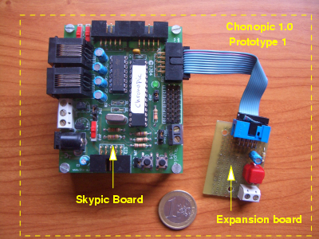

El proyecto Chronojump de Xavier de Blas ha ganado el primer premio en los “Trophees du Libre” en la categoría de Educación. A parte de sus múltiples aplicaciones en el campo de la biomecánica mi interés por este proyecto es por el uso combinado de hardware y software libres. Frente a las típicas aplicaciones de software libre que sólo tienen código, esta se basa en un hardware externo que es libre.

El hardware se denomina ChronoPic. El primer prototipo se realizó con una tarjeta Skypic. La prueba de concepto funcionó y permitió que el software interactuase con el “mundo exterior”. Al ser hardware libre, gente de todas partes del mundo se pudieron montar sus prototipos y utilizar Chronojump.
También, por ser libre, es posible su modificación. Y así fue como Juan Fernando Pardo creó un nuevo prototipo que se conecta directamente por el USB y contiene sólo los componentes mínimos, abaratando mucho los costes. Actualmente Ricardo Derbes está trabajando en el diseño industrial del prototipo de Juan Fernando.
Y es que ahora, gracias a aplicaciones libres de diseño electrónico como Kicad, es posible compartir los diseños hardware, sin importar el sistema operativo que se utilice y almacenándose los planos en un formato abierto. Esto garantiza que los diseños nunca se perderán.
Pero…¿Que Hace?
Hola,
En enlace al proyecto chronojump estaba roto. Ya lo he corregido. La página oficial es esta:
http://www.gnome.org/projects/chronojump/index_es.html
y aquí puedes encontrar la presentación que se hizo (en inglés):
http://www.gnome.org/projects/chronojump/slides-en-fr/1.html
El Proyecto Chronojump es un sistema de la medición, gestión y estadística de las fases temporales del salto. Los atletas se sitúan en una plataforma y realizan una serie de saltos. Mediante la medición del tiempo de vuelo de estos saltos es posible conocer el estado forma del deportista.
La tarjeta Chronopic es la que realiza las mediciones y las envía por el puerto serie al PC.